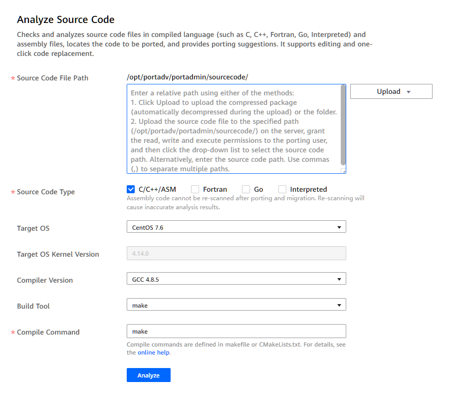

Prerequisites
You have logged in to the Kunpeng Porting Advisor WebUI.

- The build command to upload the build file in the source package is executed during the task running. Make sure that the content uploaded is the content that needs to be analyzed and checked and that there are no security issues to avoid affecting the normal operation of the server.
- /opt/portadv is the default installation directory of the tool. The following uses this directory as an example. Replace it with the actual directory.
Procedure
- Choose Source Code Porting from the navigation pane on the left.
- In the analysis task creation area, set task parameters.Figure 1 Source code porting
Table 1 Source code porting parameters Parameter
Description
Source Code File Path
Enter a relative path by using either of the following methods:
- Click Upload to upload the package. The package will be automatically decompressed during the upload process.
- Manually upload the source code file to the specified path (for example, /opt/portadv/portadmin/sourcecode/) on the server. Grant the read, write, and execute permissions to the porting user. Then, click the text box to select the source code file path from the drop-down list. You can also manually enter the source code file path.NOTE:
If the source code to be scanned contains assembly code only, you need to compile and generate the make.log file in the root directory of the source code file, and then compress and upload the package. For example, to scan the source code example that contains pure assembly code, create make.log in the /opt/portadv/User name/sourcecode/example/ directory and then enter the relative path example.
In the Upload drop-down menu, you can choose:- Compressed package: Select the source code package. The tool automatically decompresses the package.NOTE:
- Only tar, tar.bz, tar.bz2, tar.gz, tar.xz, tbz, tbz2, tgz, txz, and zip packages can be uploaded. Only one package can be uploaded at a time. The size of the source code package should be less than or equal to 1 GB. The decompressed file size should be less than or equal to half of the remaining drive space.
- The tool automatically decompresses the package to a directory in the same name as the compressed package. For example, if the uploaded package is test.zip, the tool automatically decompresses the package to the test folder.
- Folder: Select the source code folder to be uploaded.NOTE:
- Only one folder can be uploaded at a time. The size of the folder must be less than or equal to half of the remaining drive space.
- Internet Explorer does not support folder upload. You can use other browsers such as Google Chrome and Microsoft Edge to upload folders.
Source Code Type
Select the type of the source code.
Value:
Compiler Version
Select the version of the compiler.
The default compiler versions supported by the OSs are as follows:
- BC-Linux 7.6: GCC 4.8.5
- BC-Linux 7.7: GCC 4.8.5
- CentOS 7.4: GCC 4.8.5
- CentOS 7.5: GCC 4.8.5
- CentOS 7.6: GCC 4.8.5
- CentOS 7.7: GCC 4.8.5
- CentOS 8.0: GCC 8.2
- CentOS 8.1: GCC 8.3
- CentOS 8.2: GCC 8.3
- Deepin 15.2: GCC 6.3
- Debian 10: GCC 8.3
- EulerOS 2.8: GCC 7.3
- iSoft 5.1: GCC 7.3
- Kylin V10 SP1: GCC 7.3
- LinxOS 6.0.90: GCC 6.3
- NeoKylin V7U5: GCC 4.8.5
- NeoKylin V7U6: GCC 4.8.5
- openEuler 20.03: GCC 7.3
- openEuler 20.03 SP1: GCC 7.3 (default)
- openEuler 20.03 SP2: GCC 7.3 (default)
- SLES 15.1: GCC 7.4
- Ubuntu 18.04.x: GCC 7.3
- Ubuntu 20.04.x: GCC 9.3
- UOS 20 SP1: GCC 8.3
- uosEuler 20: GCC 7.3
For C/C++, ASM, and Go source code, you can select from:
- GCC 4.8.5/4.9.3/5.1/5.2/5.3/5.4/5.5/6.1/6.2/6.3/6.4/6.5/7.1/7.2/7.3/7.4/8.1/8.2/8.3/9.1/9.2/9.3NOTE:
The C, C++, and ASM languages share the same compiler version with the Go language.
For Fortran source code, you can select from:
- GFORTRAN 7
- GFORTRAN 8
- GFORTRAN 9
Build Tool
Select the build tool to be used.
Value:
- make
- cmake
- automake
- goNOTE:
The go option is available only when only Go or both Go and Interpreted are selected for Source Code Type.
Compile Command
Select the command to be used to compile the source code.
The compile command is determined based on the configuration file of the build tool. For details, see Identifying Compile Commands Using the Build Tool Configuration File.
Target OS
Select the version of the target OS. Value:
- BC-Linux 7.6/7.7
- CentOS 7.4/7.5/7.6/7.7/8.0/8.1/8.2
- Deepin V15.2
- Debian 10
- EulerOS 2.8
- iSoft 5.1
- Kylin V10 SP1
- LinxOS 6.0.90
- NeoKylin V7U5
- NeoKylin V7U6
- openEuler 20.03
- openEuler 20.03 SP1
- openEuler 20.03 SP2
- SLES 15.1
- Ubuntu 18.04.x
- Ubuntu 20.04.x
- UOS 20 SP1
- uosEuler 20
- More
NOTE:Click More, upgrade the dependency dictionary according to the steps on the page, and view the updated OS list.
Target OS Kernel Version
Kernel version of the target operating system.
- BC-Linux 7.6: 4.19.25
- BC-Linux 7.7: 4.19.25
- CentOS 7.4: 4.11.0
- CentOS 7.5: 4.14.0
- CentOS 7.6: 4.14.0
- CentOS 7.7: 4.18.0
- CentOS 8.0: 4.18.0
- CentOS 8.1: 4.18.0
- CentOS 8.2: 4.18.0
- Deepin V15.2: 4.19.34
- Debian 10: 4.14.0
- EulerOS 2.8: 4.19.36
- iSoft 5.1: 4.19.90
- Kylin V10 SP1: 4.19.90
- LinxOS 6.0.90: 4.19.0
- NeoKylin V7U5: 4.14.0
- NeoKylin V7U6: 4.14.0
- openEuler 20.03: 4.19.90
- openEuler 20.03 SP1: 4.19.90
- openEuler 20.03 SP2: 4.19.90
- SLES 15.1: 4.12.14
- Ubuntu 18.04.x: 4.15.0
- Ubuntu 20.04.x: 5.4.0
- UOS 20 SP1: 4.19.0
- uosEuler 20: 4.19.90
NOTE:If the Glibc version is earlier than 2.28, the automatic translation of assembly files cannot be used. If you want to use this function, click View Installation Guide on the page and perform operations as prompted.
- Click Analyze.
The task progress is displayed. After the analysis is complete, click View Report to open the Porting Report page.

- To cancel a task, click Close during the analysis process.
- The tool supports concurrent running of multiple analysis tasks.
- If the task analysis fails or the evaluation result indicates that porting is not required, an empty report is generated.
- When the environment changes, the analysis result may be different, which is normal.